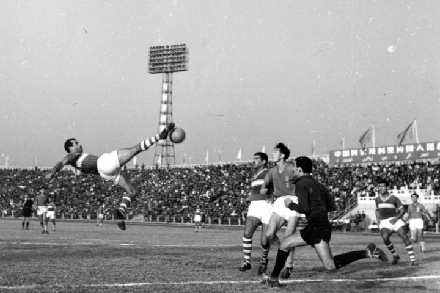
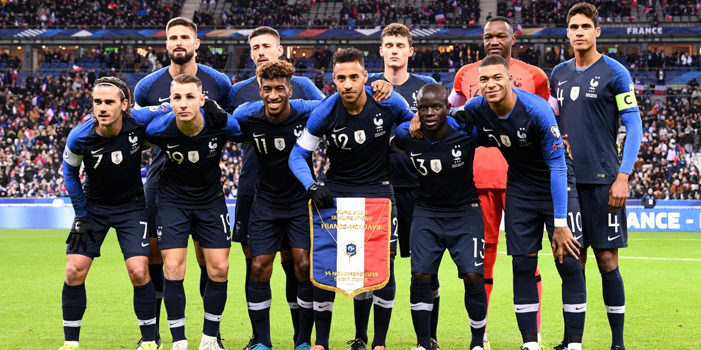
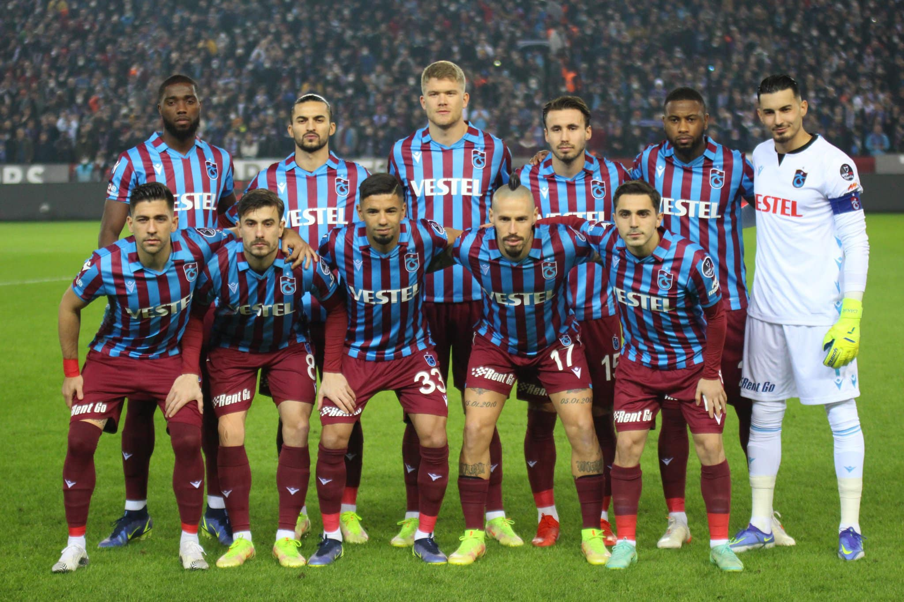

LE FOOTBALL
Histoire
Le football a été inventé en Angleterre au XIXème. Il a connu un grand succès et est devenue le sport le plus populaire au monde au XXème siècle. Ainsi la FIFA (la fédération internationale de football association) a été créer.
Le football est un sport collectif qui confronte deux équipe de 11 joueurs dans un match avec une balle, où le but est de marqué dans le camp adversaire.
Le football de nos jours est un des sports les plus populaires. Il est devenue une profession depuis 1885. Le professionnalisme de ce sport a permis d’améliorer la qualité de jeu de ce sport car les joueurs peuvent consacrer leur temps au football. Dans les événements qui ont contribuer à la popularisation du football on retrouve bien évidemment la coupe du monde qui a débuté en 1930 pour la première fois, depuis elle se répète tous les quatre ans.
Pourquoi?
Tout d’abord, d’abord j’aime le foot car je suis plutôt sportif, j’aime les sports collectifs. Ensuite, le football est un sport qui permet de nouer des liens avec des personnes notamment avec les équipes qui soudent des liens entre les personnes, dans les matchs avec la rivalité entre les équipes et l’amour du football ou bien encore, l’ambiance du football dans les stades, cette bonne humeur, cette unicité permet de nous rapprocher l’un de l’autre et d’être tous ensemble.
Les tournois, comme la coupe du monde par exemple permet au habitant de tout continent, de toutes origines, de toutes cultures de se rejoindrent et de partager des bons moments ensembles et ainsi de nous rapprocher l’un de l’autre.
Mes préférences
Personnellement, je supporte l’équipe TRABZONSPOR qui est une équipe turque, de la ville Trabzon.Mon joueur favoris, ma source d’inspiration est Cristiano Ronaldo. Un joueur originaire du Portugal qui a marqué l’histoire du football notamment avec son nombre impressionnant de buts marqués, de matchs jouer, de records battues, de championnats gagnés,… C’est pourquoi, il est pour ma part le meilleur joueur existant. Mon joueur favoris, ma source d’inspiration est Cristiano Ronaldo. Un joueur originaire du Portugal qui a marqué l’histoire du football notamment avec son nombre impressionnant de buts marqués, de matchs jouer, de records battues, de championnats gagnés,… C’est pourquoi, il est pour ma part le meilleur joueur existant.
Conclusion
In conclusion, soccer is a sport created in the 19th century in england. It is a sport that confronts two teams of 11 players where the goal is to score in the opponent's camp. This sport has become very popular nowadays with the World Cup that started in 1930.
I like this sport because I am a sportsman and it is a collective sport. Moreover, it allows different people to meet and have a good time together and I think it is a wonderful thing to see people from different cultures coming together around the same sport.
Finally I support the team Trabzonspor which is one of the best Turkish teams today and my favorite player is Cristiano Ronaldo who is for me the best player in the world with an extraordinary record